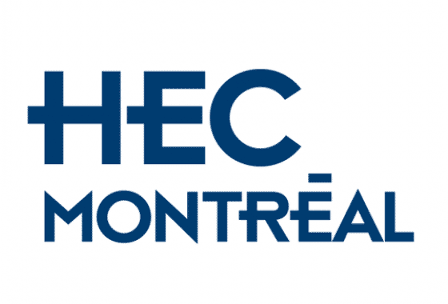
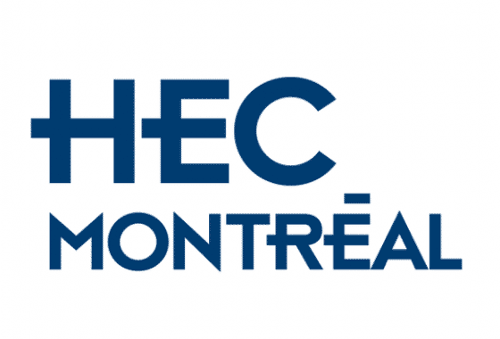

Abstract
Building virtual cells that simulate cellular responses to perturbations is a central challenge in systems biology. Because single-cell sequencing is destructive, control and perturbed cells are unpaired, requiring distribution-level modeling. Existing methods assume a single fixed response distribution under each condition. However, unobserved latent factors such as microenvironment and batch effects induce a manifold of plausible response distributions. PerturbDiff models perturbation responses as distribution-valued random variables and defines a diffusion process directly in a reproducing kernel Hilbert space. Across signaling, drug, and genetic benchmarks, PerturbDiff achieves state-of-the-art performance and improved generalization.
Motivation

- Single-cell sequencing is destructive, thereby no cell-to-cell correspondence exists.
- Existing methods often assume a single perturbed distribution Pc,τ when conditioned on observed the cell type c and perturbation type τ.
- In reality, unobservable latent biological and technical factors induce a distribution over distributions.
- We propose to model this variability at the distribution level.
Method

Distribution as Random Variable
We treat perturbed populations as distribution-valued random variables Dc,τ.
Kernel Mean Embedding
Each distribution P is mapped to μP in RKHS via kernel mean embedding.
Diffusion in Function Space
We define a DDPM-style diffusion directly over μ in Hilbert space.
MMD Objective
The Hilber-space diffusion derived denoising objective RKHS distance equals MMD, yielding a principled distribution-aware loss.
Results
Perturbation modeling
- State-of-the-art on PBMC and Tahoe100M, competitive on Replogle.
- Strong differential expression recovery.
- Robust cross-dataset generalization.
- Consistent performance across perturbation types.
- Accurate recovery of perturbation-driven differential expression (DE) patterns, compared to ground truth and the best baseline.
Pretraining
- To improve data efficiency, PerturbDiff introduces marginal pretraining by leveraging 61M cells from scRNA-seq datasets in CellxGene.
- This stage enables non-trivial zero-shot performance.
- This stage also improves low-data adaptation.
Impact
PerturbDiff provides a principled framework for virtual cell modeling, accelerating perturbation prediction in functional genomics and drug discovery. Because predictions depend on training data, the model should be used as a decision-support tool alongside experimental validation.
Citation
@article{perturbdiff,
title = {PerturbDiff: Functional Diffusion for Single-Cell Perturbation Modeling},
author = {Xinyu Yuan, Xixian Liu, Yashi Zhang, Zuobai Zhang, Hongyu Guo, and Jian Tang},
year = {2025},
}